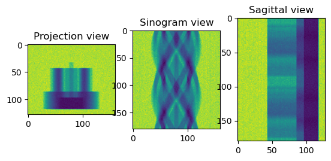
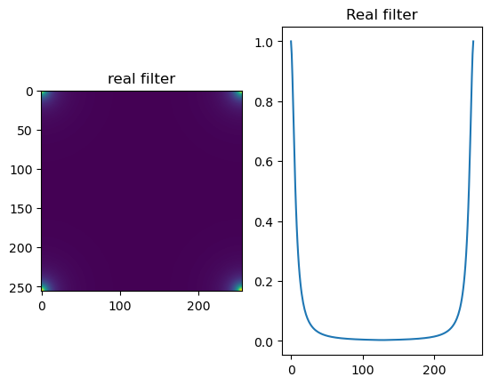
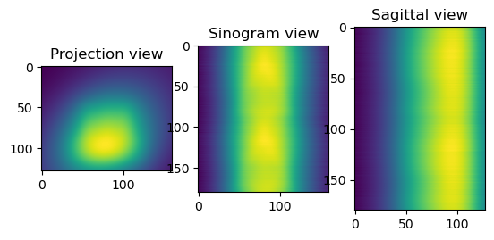
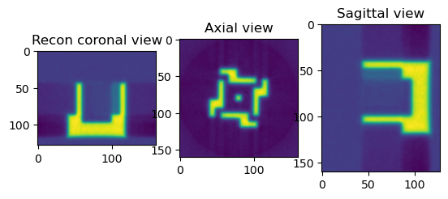
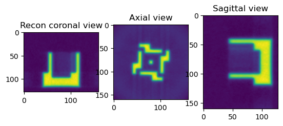

Example 1 (FBP and Fourier)#
This example shows how to use methods from the HTTomolibgpy library to do the following:#
normalise the data
calculate the centre of rotation using Vo Centering method
reconstruct using the FBP and Fourier algorithms
[1]:
import os
import numpy as np
import cupy as cp
import httomolibgpu
import matplotlib.pyplot as plt
from httomolibgpu.prep.normalize import normalize
# Load the projection data
path_lib = os.path.dirname(httomolibgpu.__file__)
in_file = os.path.abspath(
os.path.join(path_lib, "..", "tests/test_data/", "tomo_standard.npz")
)
datafile = np.load(in_file)
host_data = datafile["data"]
host_flats = datafile["flats"]
host_darks = datafile["darks"]
print(
"The shape of the data is {} as (projections, detector Y, detector X)".format(
np.shape(host_data)
)
)
print("Normalising the data")
data = cp.asarray(host_data)
flats = cp.asarray(host_flats)
darks = cp.asarray(host_darks)
data_normalised = normalize(data, flats, darks, cutoff=10, minus_log=False)
sliceSel = 64
data_normalised_np = data_normalised.get()
plt.figure()
plt.subplot(131)
plt.imshow(data_normalised_np[sliceSel, :, :])
plt.title("Projection view")
plt.subplot(132)
plt.imshow(data_normalised_np[:, sliceSel, :])
plt.title("Sinogram view")
plt.subplot(133)
plt.imshow(data_normalised_np[:, :, sliceSel])
plt.title("Sagittal view")
plt.show()
____! CCPi-regularisation package (CuPy part needed only) is missing, please install !____
The shape of the data is (180, 128, 160) as (projections, detector Y, detector X)
Normalising the data

[2]:
from httomolibgpu.recon.rotation import find_center_vo
print("Finding the Center of Rotation for the reconstruction")
cor = find_center_vo(data_normalised, ind=64)
print("The found Center of Rotation is {}".format(cor))
Finding the Center of Rotation for the reconstruction
The found Center of Rotation is 79.5
[38]:
from httomolibgpu.prep.phase import paganin_filter_tomopy
# from httomolibgpu.prep.phase import _paganin_filter_factor2, _calculate_pad_size, _reciprocal_grid
# from cupyx.scipy.fft import fftshift, ifftshift
# Compute the reciprocal grid.
# w2 = _reciprocal_grid(pixel_size, (padded_shape_dy, padded_shape_dx))
# phase_filter = _paganin_filter_factor2(energy, dist, alpha, w2).get()
# phase_filter = ifftshift(fftshift(_paganin_filter_factor2(energy, dist, alpha, w2)))
# phase_filter = phase_filter / phase_filter.max() # normalisation
# phase_filter = phase_filter.get()
# print(full_size_kernel)
# plt.figure()
# plt.imshow(phase_filter)
# plt.figure()
# plt.imshow(w2.get())
# print(np.max(curve1D))
# plt.figure()
# plt.imshow(phase_filter)
# plt.figure()
# plt.plot(curve1D)
import numpy as np
import math
from scipy.fft import fftshift, ifftshift
def _calculate_pad_size(datashape: tuple) -> list:
pad_list = []
for index, element in enumerate(datashape):
if index == 0:
pad_width = (0, 0) # do not pad the slicing dim
else:
diff = _shift_bit_length(element + 1) - element
if element % 2 == 0:
pad_width_scalar = diff // 2
pad_width = (pad_width_scalar, pad_width_scalar)
else:
# need an uneven padding for odd-number lengths
left_pad = diff // 2
right_pad = diff - left_pad
pad_width = (left_pad, right_pad)
pad_list.append(pad_width)
return pad_list
def _shift_bit_length(x: int) -> int:
return 1 << (x - 1).bit_length()
def _wavelength(energy):
return 2 * PI * PLANCK_CONSTANT * SPEED_OF_LIGHT / energy
def _paganin_filter_factor(energy, dist, alpha, w2):
return 1 / (_wavelength(energy) * dist * w2 / (4 * PI) + alpha)
def _reciprocal_coord(pixel_size: float, num_grid: int) -> cp.ndarray:
n = num_grid - 1
rc = np.arange(-n, num_grid, 2, dtype=cp.float32)
rc *= 2 * math.pi / (n * pixel_size)
return rc
def _reciprocal_grid(pixel_size, nx, ny):
# Sampling in reciprocal space.
indx = _reciprocal_coord(pixel_size, nx)
indy = _reciprocal_coord(pixel_size, ny)
np.square(indx, out=indx)
np.square(indy, out=indy)
return np.add.outer(indx, indy)
pixel_size = 0.0001
dist = 50
energy = 53
alpha = 0.1
datashape = cp.shape(data_normalised)
pad_list = _calculate_pad_size(datashape)
padded_shape_dy = datashape[1] + pad_list[1][0] + pad_list[1][1]
padded_shape_dx = datashape[2] + pad_list[2][0] + pad_list[2][1]
BOLTZMANN_CONSTANT = 1.3806488e-16 # [erg/k]
SPEED_OF_LIGHT = 299792458e2 # [cm/s]
PI = 3.14159265359
PLANCK_CONSTANT = 6.58211928e-19 # [keV*s]
w2 = _reciprocal_grid(pixel_size, padded_shape_dy, padded_shape_dx)
phase_filter = ifftshift(_paganin_filter_factor(energy, dist, alpha, w2))
phase_filter = phase_filter / phase_filter.max() # normalisation
cutoff = 1e-2
curve1D = np.abs(phase_filter[0, :])
half_width_kernel = np.argmax(curve1D < cutoff)
full_size_kernel = 2 * half_width_kernel
print(full_size_kernel)
plt.figure()
plt.subplot(121)
plt.imshow(phase_filter)
plt.title("real filter")
plt.subplot(122)
plt.plot(curve1D)
plt.title("Real filter")
plt.show()
# def _reciprocal_coord(pixel_size, num_grid):
# n = num_grid - 1
# rc = np.arange(-n, num_grid, 2, dtype = np.float32)
# rc *= 0.5 / (n * pixel_size)
# return rc
# import numpy
#
# lamda = (1.23984193e-9)/energy #for photons: E = 1keV -> 1.23984193 nm
# delta = 1
# beta = 1
# print(delta/beta)
# delta_x = pixel_size/(2*numpy.pi); delta_y = delta_x
# k_x = numpy.fft.fftfreq(padded_shape_dx, d=delta_x)
# k_y = numpy.fft.fftfreq(padded_shape_dy, d=delta_y)
# k_x_grid, k_y_grid = numpy.meshgrid(k_x, k_y)
# k_squared = k_x_grid**2 + k_y_grid**2
# paganinFilter = 1.0 / (1.0 + dist * lamda * delta * k_squared /
# (4 * numpy.pi * beta))
# plt.figure()
# plt.imshow(ifftshift(paganinFilter))
134

[42]:
from httomolibgpu.prep.phase import paganin_filter_tomopy
print("Applying Paganin filter")
phase_contrast_data = paganin_filter_tomopy(
data_normalised, pixel_size=0.0001, dist=50, energy=53, alpha=0.001
)
sliceSel = 64
phase_contrast_data_np = phase_contrast_data.get()
plt.figure()
plt.subplot(131)
plt.imshow(phase_contrast_data_np[sliceSel, :, :])
plt.title("Projection view")
plt.subplot(132)
plt.imshow(phase_contrast_data_np[:, sliceSel, :])
plt.title("Sinogram view")
plt.subplot(133)
plt.imshow(phase_contrast_data_np[:, :, sliceSel])
plt.title("Sagittal view")
plt.show()
Applying Paganin filter

[15]:
print("Perform Reconstruction using FBP")
from httomolibgpu.recon.algorithm import FBP
angles = np.linspace(0.0 * np.pi / 180.0, 180.0 * np.pi / 180.0, data.shape[0])
reconFBP = FBP(phase_contrast_data, angles=angles, center=cor, filter_freq_cutoff=1.1)
reconFBP_np = reconFBP.get()
sliceSel = 64
plt.figure()
plt.subplot(131)
plt.imshow(reconFBP_np[sliceSel, :, :])
plt.title("Recon coronal view")
plt.subplot(132)
plt.imshow(reconFBP_np[:, sliceSel, :])
plt.title("Axial view")
plt.subplot(133)
plt.imshow(reconFBP_np[:, :, sliceSel])
plt.title("Sagittal view")
plt.show()
Perform Reconstruction using FBP

[16]:
print("Perform Reconstruction using Fourier (LPRec)")
from httomolibgpu.recon.algorithm import LPRec
angles = np.linspace(0.0 * np.pi / 180.0, 180.0 * np.pi / 180.0, data.shape[0])
reconLPRec = LPRec(phase_contrast_data, angles=angles, center=cor)
reconLPRec_np = reconLPRec.get()
sliceSel = 64
plt.figure()
plt.subplot(131)
plt.imshow(reconLPRec_np[sliceSel, :, :])
plt.title("Recon coronal view")
plt.subplot(132)
plt.imshow(reconLPRec_np[:, sliceSel, :])
plt.title("Axial view")
plt.subplot(133)
plt.imshow(reconLPRec_np[:, :, sliceSel])
plt.title("Sagittal view")
plt.show()
Perform Reconstruction using Fourier (LPRec)
